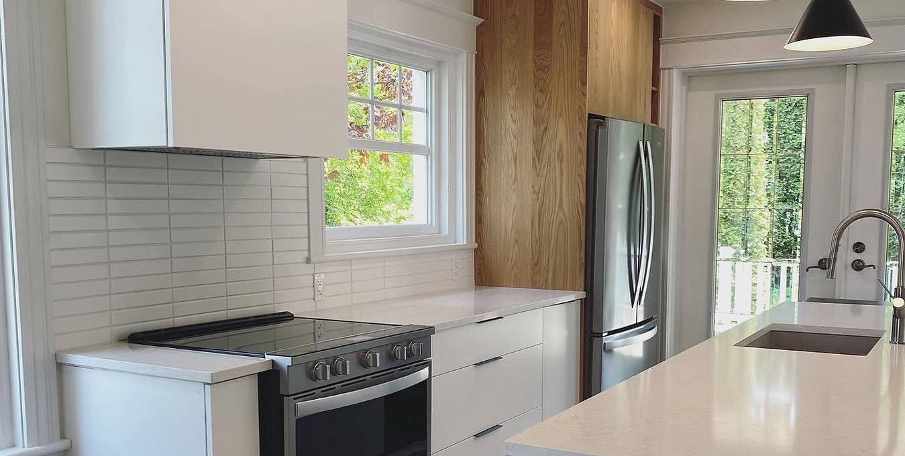

A.B ENTRETIN
MENAGER
MENAGER
Un service d'exception
À PROPOS
Notre histoire
Depuis notre création, nous avons travaillé avec de nombreux clients de la région. Besoin de professionnels
expérimentés et à votre écoute ? Nous accordons un soin tout particulier au recrutement de nos employés. Nous
réalisons tous les projets de manière efficace et dans les délais impartis, et faisons notre maximum pour établir des
relations durables avec nos clients.
expérimentés et à votre écoute ? Nous accordons un soin tout particulier au recrutement de nos employés. Nous
réalisons tous les projets de manière efficace et dans les délais impartis, et faisons notre maximum pour établir des
relations durables avec nos clients.
NOS SERVICES
Pour répondre à tous les besoins
NETTOYAGE COMMERCIAL
Étant nous-mêmes une entreprise, nous comprenons à quel point un
entretien régulier et minutieux est primordial au bon fonctionnement
de l'entreprise. Vous constaterez par vous-même que nous
répondons aux besoins et attentes de chaque client.


CONSTRUCTION RÉSIDENTIELLE
Nous avons l'expérience et les compétences nécessaires pour
effectuer pratiquement tous les types de travaux qui nous sont
confiés. Avec A.B Entretien Ménager, nos clients savent exactement
à quoi s'attendre : du professionnalisme, de l'efficacité et des
résultats exceptionnels.
NETTOYAGE APRÈS CHANTIER
A.B Entretien Ménager se spécialise en nettoyage après chantier.
Nous avons développé avec les années une expertise pour le
ménage après construction pour les jumelés, condos et maisons.
Nous disposons d'une équipe de confiance pour un ménage
impeccable répondant à vos attentes les plus rigoureuses.


ENTRETIEN RÉSIDENTIEL
Que ce soit pour un grand ménage ou pour un entretien régulier,
vous pouvez compter sur nous pour nous montrer professionnels,
discrets et efficaces pour entretenir votre précieuse demeure.
INSTITUTIONNEL
Nous accordons une grande importance à la santé et à la sécurité
des usagers qui fréquentent les édifices institutionnels comme les
garderies ou les résidences de personnes âgées .


CONTACT

.